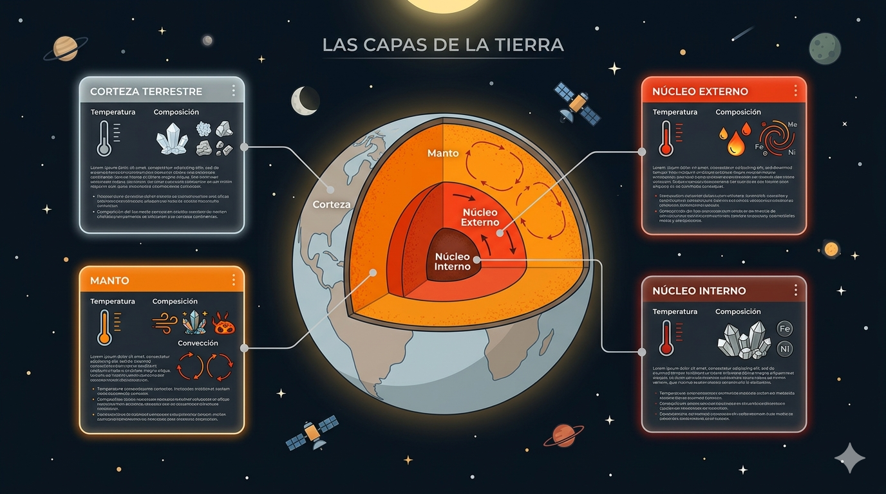

Corte 1: Fundamentos y Creación de Contenido Digital
Nuestra Reflexión
"Hoy en día la tecnología nos permite usar muchos recursos interactivos para aprender, como videos, animaciones o actividades digitales. Sin embargo, los principios de Mayer nos recuerdan que no se trata solo de usar tecnología, sino de organizar bien la información para que sea clara y fácil de entender. Cuando se combinan bien la tecnología, los recursos interactivos y un buen diseño del contenido, el aprendizaje se vuelve más dinámico y significativo."
Principios del Diseño Multimedia
Teoría de Mayer y elementos clave del diseño (Jerarquía, Color, Tipografía).
Tendencias y Licenciamiento
Rol del programador, usuario e importancia de Creative Commons en educación.
Diapositivas - Trabajo Colaborativo
Presentación S1
Conceptos fundamentales y análisis interactivo.
Presentación S1
Principios base y tipos de contenido multimedia.
Creación de Contenido Digital
Vídeo Introductorio del Proyecto
Matrices de Planeación
Matriz de Proyecto
Matriz de Proyecto
Infografías y Producción de Video
Pausas Activas
Mundo Anime
IA Generativa y Sostenibilidad
IA y Multimedia
Sostenibilidad Ambiental
Corte 2
Proyectos en Scratch
Proyecto Scratch 1
Proyecto Scratch 2
Proyecto Scratch 3
Proyecto Scratch 4
Proyecto Scratch 5
Fundamentos en App Inventor
Aplicaciones App Inventor
Aplicaciones de Silvia
Aplicaciones de Daniel
Aplicaciones con Base de Datos y Parciales
Aplicaciones con Base de Datos
Aplicaciones Parciales
Cómo Crear un Prompt Efectivo para IA Generativa
Para crear un prompt efectivo, es importante ser claro y específico en lo que se desea obtener. Un buen prompt debe incluir detalles relevantes, contexto y cualquier restricción necesaria para guiar a la IA hacia la respuesta deseada. Además, es útil utilizar un lenguaje natural y evitar ambigüedades para mejorar la comprensión de la IA.
La Estructura de un Prompt Maestro
Un prompt de alta calidad suele contener cuatro elementos clave. No siempre necesitas todos, pero mientras más incluyas, mejor será el resultado:
- Rol: Dile a la IA quién debe ser (ej. "Actúa como un desarrollador Senior", "Eres un experto en marketing").
- Contexto: Dale los antecedentes. ¿Para qué es esto? ¿Quién es la audiencia?
- Tarea: La acción específica que debe realizar (ej. "Resume", "Escribe un código", "Analiza").
- Formato: Cómo quieres recibir la información (ej. "En una tabla", "En código Markdown", "En tres párrafos").
2. Técnicas Avanzadas de Optimización
Few-Shot Prompting (Dar ejemplos)
La IA aprende patrones. Si le das un par de ejemplos de cómo quieres que responda, la precisión aumenta drásticamente.
Ejemplo:
"Traduce frases de lenguaje coloquial a SQL:
Frase: 'Dame todos los usuarios de Bogotá' -> SELECT * FROM users WHERE city = 'Bogotá';
Frase: 'Lista los productos sin stock' -> SELECT * FROM products WHERE stock = 0;"
Chain of Thought (Cadena de pensamiento)
Si la tarea es compleja o matemática, pide a la IA que "piense paso a paso". Esto reduce las alucinaciones (errores) porque la obliga a procesar la lógica antes de dar la conclusión final.
Anatomía de un Prompt Efectivo
Framework de 6 componentes para maximizar la precisión de la IA
Rol / Persona
Asigna una identidad experta
Asigna una identidad experta a la IA para calibrar su tono, nivel de conocimiento y vocabulario técnico. Esto ayuda a que el modelo filtre su base de datos y priorice las soluciones, patrones de diseño o enfoques típicos de esa profesión específica.
"Actúa como un desarrollador Senior backend experto en optimización de bases de datos relacionales..."
Contexto
Proporciona información de fondo
Provee información de fondo, entorno, audiencia y situación para reducir la ambigüedad y enfocar la respuesta. Al definir el escenario del problema, evitas que la IA asuma el contexto más genérico posible y logras que se alinee con tu situación real.
"Estoy construyendo el módulo de inventario de una aplicación local para un taller y la audiencia son usuarios principiantes..."
Tarea / Instrucción
Define qué debe hacer la IA
Define qué debe hacer la IA exactamente utilizando verbos de acción imperativos, claros y directos. Es el núcleo del prompt; una instrucción precisa e imperiosa elimina respuestas vagas y va directo al grano.
"Genera el código para una función en Java que valide...", "Resume", "Analiza".
Formato de Salida
Especifica la estructura de respuesta
Especifica cómo quieres estructurar la respuesta, lo cual es crucial para ahorrar tiempo de edición o para integrar el resultado con otros sistemas y aplicaciones. Puedes solicitar estructuras simples o formatos mixtos según lo requieras.
"Devuelve la respuesta en una tabla Markdown", "JSON con las llaves correspondientes", "Bullets".
Ejemplos (Few-Shot)
Muestra patrones esperados
Muestra patrones de entrada y salida deseados para que el modelo imite la estructura exacta que buscas. Esta técnica de "pocos disparos" es la forma más efectiva de enseñar una regla compleja o un formato de transformación de datos sin dar largas explicaciones.
"Input: A -> Output: B" (Mostrar dos o tres casos resueltos antes de pedir el resultado final).
Restricciones
Define límites operativos
Define límites negativos, fronteras operativas y reglas estrictas de lo que la IA NO debe hacer. Esto evita que el modelo sea redundante, que use herramientas no deseadas o que "alucine" inventando información.
"NO uses librerías externas adicionales", "No inventes datos", "Máximo 50 palabras".
Ejercicios de promts para la IA
Prompt para Diseñador Instruccional
Prompt en de Documento
Eres un profesor de física conocido por hacer fácil lo difícil.Explica el concepto de "Teoría de la Relatividad Especial de Einstein" utilizando la técnica de Feynman. Dirígete a un público sin conocimientos científicos previos. Utiliza una metáfora basada en un tren en movimiento y un reloj.
Contenido adicional
Prompt para Ilustración
Coloca este prompt en tu generador de imágenes (resultado de ejemplo abajo):
Actua como ilustrador educativo modern0 y limpia sobre "Las Capas de la Tierra" (Corteza, Manto, Núcleo Externo, Núcleo Interno). El estilo debe ser vectorial 2D, con una paleta de colores cálidos (gises, naranjas y rojos intensos). Alrededor del diagrama principal de la Tierra en corte, simula "ventanas" o "cuadros de texto flotante" (como si fueran interactivos). Cada cuadro debe contener iconos claros de temperatura y composición química (como pequeños cristales y metales fundidos), junto con descripciones detalladas para cada capa. El fondo debe ser un espacio oscuro con elementos del sistema solar, estrellas y satélites. Alta definición, iluminación suave y sin texto real (diseño limpio y minimalista). --ar 16:9

Prompt de Programacion y creatividad
Prompt estructurado
Actúa como un desarrollador Java Senior especializado en Swing, SQLite y MVC, con experiencia en NetBeans. Tengo un proyecto de concesionario "SA Motors" con un módulo de gestión de motos que presenta errores y falta de visualización de datos. Necesito que me entregues el código completamente corregido de cuatro archivos: ControladorBike.java, BikeDao.java, Bike.java y bikeManage.java. La base de datos es SQLite (baseConcesionario.db), con tabla VEHICULO1 que tiene campos: vehi_id, tipo_vehi_id, proveedor_id, marca, modelo, year, color, Placa, Costo, estado, fecha_ingreso. Las motos se filtran por tipo_vehi_id IN (6,7,8). También existen las tablas TIPO_VEHICULO y PROVEEDOR.
Corrige los siguientes problemas:
- Cambia toda referencia de la clase 'Car' a 'Bike'.
- En ControladorBike, cambia 'Test.bikeManage vista' por 'bikeManage vista' y ajusta el constructor.
- Renombra el método 'armarCar' a 'armarBike'.
- En BikeDao, usa nombres de columnas en las consultas SQL (no índices numéricos).
- Agrega manejo de excepciones con try-with-resources o finally, cerrando conexiones, statements y resultsets.
- Incluye mensajes de diagnóstico en consola para depurar.
Para la vista bikeManage.java, integra iconos PNG desde la carpeta src/icons/:
- SAMotors.png (logo)
- MainMenu.png (para el botón Inicio)
- Car_lcon.png (para el botón Carros)
- Bike_lcon.png (para el botón Motos)
- Stats_lcon.png (para el botón Reportes)
- menu_icon_152578.png (para el botón menú hamburguesa)
Si algún icono no existe, usa emoji como fallback (🏠, 🚗, 🏍, etc.). Mantén exactamente los mismos nombres de componentes públicos (txtMarca, tablaMotos, cmbEstado, etc.) para que el controlador siga funcionando. La tabla debe mostrar los datos de la BD ocultando las columnas ID, TipoID y ProvID. El sidebar debe ser colapsable con el botón de menú. Las estadísticas (total, disponibles, vendidos, mantenimiento) deben actualizarse correctamente.
Entrégame el código completo de los cuatro archivos en bloques separados con triple backticks, indicando la ruta del archivo en un comentario al inicio de cada bloque. No añadas explicaciones fuera de los bloques. No uses librerías externas adicionales, no inventes datos, no cambies los nombres de componentes públicos, no omitas el cierre de recursos y asegura que el código compile sin errores.

Prompt de personalizacion del aprendizaje
Coloca este prompt genera una pagina interactiva sobre la música para educar
Actúa como un desarrollador web experto en Frontend y UX/UI Creativo. Necesito crear una página web interactiva sobre el mundo de la música. Los requisitos son los siguientes:
Arquitectura: Entrega el código en bloques separados: uno para HTML5, otro para CSS3 y uno para JavaScript.
Diseño: El estilo debe ser moderno, artístico y 'bastante creativo'. Usa una paleta de colores inspirada en la música (tonos oscuros con acentos neón o estilo minimalista elegante). Incluye secciones para historia de la música, géneros y una galería visual.
El Piano Interactivo:
Diseña un teclado de piano funcional en la parte inferior o central.
Debe tener teclas blancas y negras correctamente posicionadas.
Funcionalidad: Al hacer clic en cada tecla, debe sonar la nota correspondiente.
Importante: Utiliza la Web Audio API de JavaScript para generar los sonidos de las notas (Do, Re, Mi, etc.) de forma sintética, para que no dependa de archivos .mp3 externos.
Interactividad: Añade efectos visuales (animaciones CSS) cuando se presione una tecla o se pase el cursor sobre los elementos de la página.

Referencias Bibliográficas (APA)
Chica, D. (s.f.). Los doce principios del aprendizaje multimedia de Richard Mayer.
OpenAI. (2025). ChatGPT.
Google. (2025). Gemini.
Canva. (2025). Herramienta de diseño gráfico.
Genially. (2025). Plataforma interactiva.
Mayer, R. E. (2020). Multimedia Learning.